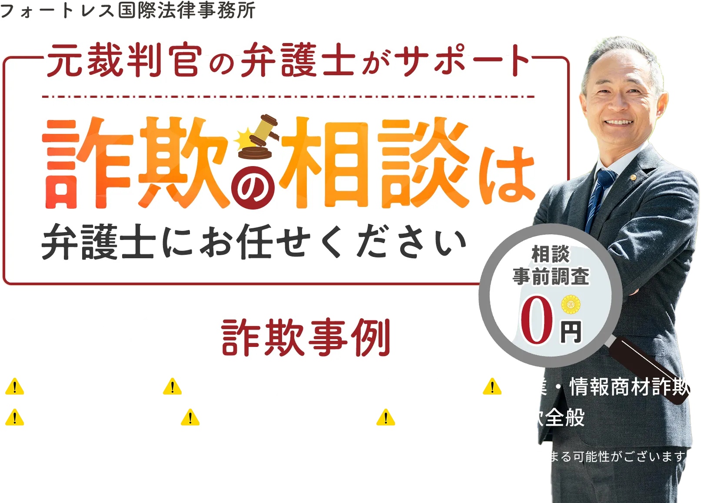
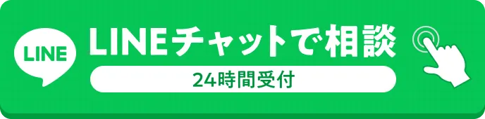
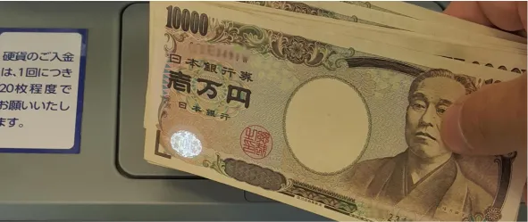
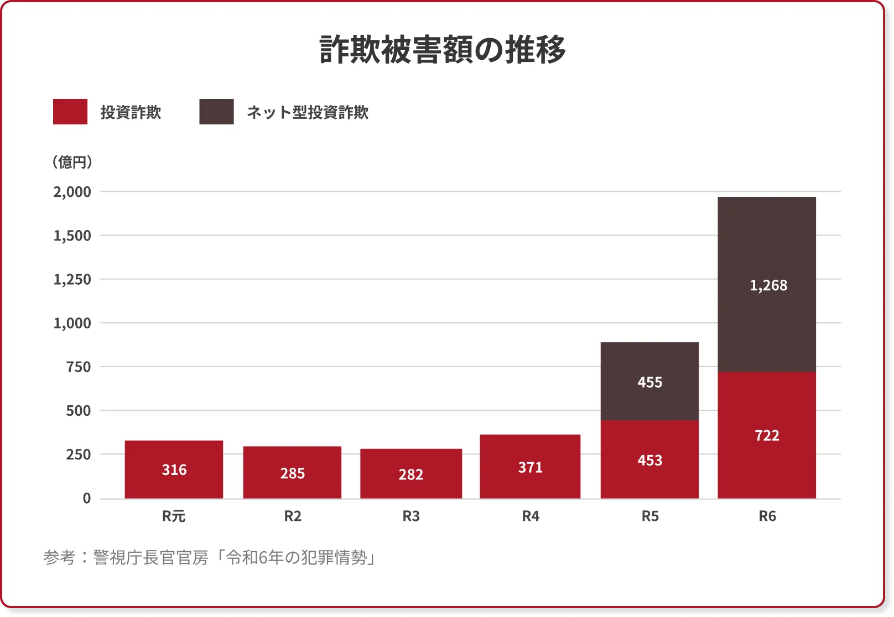
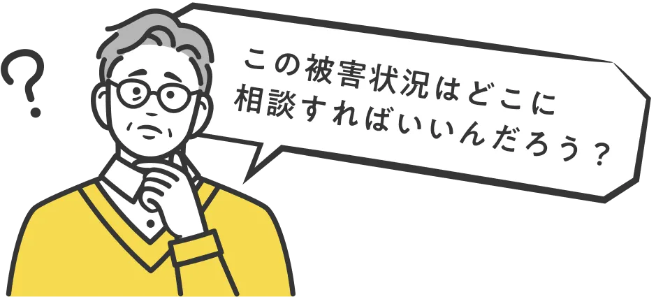
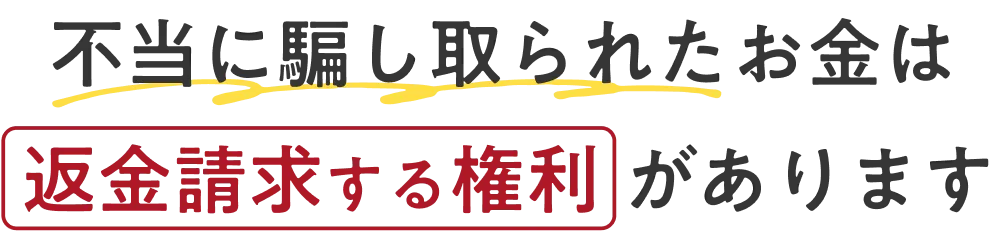

詐欺被害は早期対応が解決に繋がります
ご依頼の前にまずは詐欺か
どうか調査しますのでご相談ください

こんなお悩み
ありませんか？
-
LINEの投資グループに
いきなり招待された -
投資で得た利益を
引き出そうと
したら
出金できなかった -
高額なFX売買ツールを購入したが全く稼げなかった
-
収支マイナスになる
投資用不動産を購入してしまった -

投資資金を個人口座に
振込するよう指示された -
絶対儲かるという謳い文句で
副業サイトの
高額プランを契約してしまった
一つでも心当たりがあったら投資詐欺に
遭われている可能性が
非常に高いです
約2000億円
これは去年1年間の詐欺被害額です。
過去最悪の数字であり、
詐欺は年々増えていくと言われています。

騙されたお金を
取り戻すためには
以下の手順があります
- 弁護士の場合
- 1.詐欺資料の提出(相談者側)
- 2.着手可能か判断
- 3.調査
- 4.立件
- 5.逮捕
-
6.振込先口座の凍結
※詐欺であると判断される証拠の提出ができず初動が遅れてしまうケースもございます - 7.返金請求
- 警察の場合
- 1.詐欺資料の提出(相談者側)
- 2.着手可能か判断
- 3.調査
- 4.立件
- 5.逮捕
-
6.振込先口座の凍結
※詐欺であると判断される証拠の提出ができず初動が遅れてしまうケースもございます - 7.返金請求
相談先による
メリット・デメリット
| 弁護士 | 警察 | |
|---|---|---|
| メリット |
|
|
| デメリット |
|
|

弁護士に相談していただければ、
警察に相談した方が良い事案の
アドバイスもできます。
まずは当事務所の
無料相談をご利用ください！

返金の可能性が高くなります
まずは無料相談で解決への第一歩を踏み出しましょう
フォートレス国際法律事務所の返金請求の手続き
-
返金請求すべき相手方を特定できる
返金を請求するためには、相手方の情報が必要になります。氏名や住所などが不明で連絡がつかない場合は返金が困難なこともあります。
しかし、このような状況でも弁護士会照会制度を利用すれば振込先口座情報から氏名や住所を調べたり、金融機関に対して口座の有無や残高を調べることができるため、その結果「返還請求すべき対象者を特定」することができます。 -
振込先口座を凍結して残っている資金を被害回復分配金として返還
詐欺被害に遭った疑いがあり、振込先の口座が判明している場合には金融機関に口座凍結を要請します。これにより相手方が口座からお金を引き出せないようにします。
また、振込先の口座に一定の残高が残っている場合は被害額の全部または一部を被害回復分配金として返還されるようサポートいたします。 -
訴訟
回収可能な預金、不動産、債権などがあれば訴訟を提起し預金等を差し押さえる手続きを行うことが可能です。
このような内容に
心当たりはありませんか？
※必ずしも返金を保証するものではありません。ケースによっては返金ができない場合もございます。
※返金については被害金を振り込んだ口座数、振込金額、口座凍結のタイミング、名義人の属性
（国籍、職業、収入、親族の有無、社会的地位）により比較的成功の可能性が高い場合と成功の低い場合がございます。
弊所コラムでも、数多くの事案について情報発信を行っております。
上記以外にも
様々なケースの
ご相談を承っております。
フォートレス国際法律事務所への
ご依頼の流れ
-
STEP1
- お問い合わせ
-
まずはLINE・お電話にてご連絡ください。
相談日程を調整いたします。※LINE登録後、こちらからしつこい勧誘連絡をすることは一切ありません
-
STEP2
- 無料相談・無料事前調査
-
弊所までご来所いただくか、お電話で被害状況を詳しくヒアリングさせていただきます。
詐欺かどうか調査し、着手できるか、被害金回収までの期間や解決方法などご相談者様の疑問を解消いたします。相談は何度でも無料です。
-
STEP3
- ご依頼・ご契約
-
ご相談内容や事前調査の結果を精査し、着手可能かを判断いたします。
お見積もりをご承諾いただきご依頼くださる場合には、委任契約書の内容を確認して契約を締結します。
- ここから全ての
お手続きをお任せください -
STEP4
- 返金交渉
-
契約後すぐに行動します。
相手方の口座凍結・証拠捜査などあらゆる手を尽くして被害金回収のために尽力いたします。
進捗状況については随時報告いたします。
-
STEP5
- 解決
-
法的根拠に基づき、返金請求・差し押さえ等の手段で資金を取り戻し、ご相談者様に返金いたします。
※必ずしも返金が保証されるものではありません。ケースによっては返金ができない事案もございます。
費用について
-
相談料
0円
-
事前調査
0円
-
事務手数料
0円
-
着手金
2%〜
-
成功報酬
2%〜
※ケースによって料金は異なります。
- 当事務所が選ばれる理由
-
投資詐欺の被害に遭われた方はすでに大きな金額を損失していることが多いため、
費用負担を軽減して依頼しやすいように
当事務所では
相談料・事前調査・事務手数料0円で承っております。
あなたの
被害状況を教えてください
どのような詐欺被害に遭われたでしょうか？
既読
- 株式投資詐欺
- 海外FX詐欺
-
副業・
情報商材詐欺 - その他
被害金額はおいくらでしょうか？
既読
- 1~50万円
- 50~100万円
- 100~200万円
- 200万円以上
被害に遭われたのはいつ頃でしょうか？
既読
- 1ヶ月以内
- 3ヶ月以内
- 6ヶ月以内
- 6ヶ月以上
ご回答ありがとうございます。
被害状況によって返金請求が可能かどうかが大きく変わります。
返金請求を目指す場合は早期相談がとても重要です。
よくある質問
- 本当に相談は無料ですか？
-
はい。当事務所では対応範囲内の相談内容である限り、どのような内容でも無料でご相談を承っておりますのでご安心ください。
- 他の法律事務所に断られましたが相談できますか？
-
他事務所で断られた事案でも、依頼内容によっては当事務所でお引き受けできる可能性がございます。
まずはお気軽にお問い合わせください。
- 詐欺の証拠がないのですが大丈夫ですか？
-
大丈夫です。証拠があれば確実ですが、証拠を残されているご相談者様はほとんどいらっしゃいません。
証拠となる資料はなかなかご相談者様でのご判断は難しいものです。まずはご相談をいただければ証拠となる資料やその時の状況を伺って返還請求を行うことが可能な事案であるかの判断をいたします。
- 解決するまでどのくらいの期間がかかりますか？
-
依頼内容によって期間は異なりますが、目安はあります。
相手方との返金交渉がスムーズに進んだ場合ですと着手から1〜3ヶ月程度です。
調査や交渉などに時間がかかるもの、訴訟等を行うものですと半年以上かかる場合もございます。
- 警察に相談した方がいいですか？
-
投資詐欺の被害は近年急増しているため、警察に相談しても被害届を受理してもらえない場合がございます。
当事務所にお問い合わせいただければ、警察に相談した方が良い事案なのかをお伝えすることができます。まずはお気軽にご相談ください。
- 費用の支払方法を教えてください
-
現金払い以外にもクレジットカード決済、銀行振込が可能です。
基本的に一括払いとさせていただいておりますが、場合によっては分割払いによる対応も可能です。ご遠慮なくご相談ください。
- 家族に知られないように依頼できますか？
-
可能です。弁護士は守秘義務を負っておりますので、ご相談内容をご家族にお伝えすることは絶対ありません。
書類の送付方法や日常的な連絡手段、電話のタイミングなどまで柔軟にご相談に応じさせていただきます。
フォートレス国際法律事務所
事務所概要
- 事務所名
- フォートレス国際法律事務所
- 代表弁護士
- 鎌田 豊彦（東京弁護士会）
- 経歴
-
昭和52年 慶応義塾大学法学部法律学科 卒業
昭和52年 同大学法学研究科 入学
昭和55年 同科 卒業(法学修士)
昭和54年 司法試験合格
昭和57年 東京地方裁判所判事補佐官
平成05年 千葉地方家庭裁判所判事
平成16年 弁護士登録
平成17年 都内法律事務所 勤務
平成28年 トライアンフ法律事務所 設立
令和7年 フォートレス国際法律事務所 設立
- 所在地
- 東京都港区新橋５丁目２７−３ 新橋五光ビル５階
- 情報発信
- コラムはこちら
返金が困難になります。
返金の可能性を高めたいのであれば、
今すぐ行動することが肝心です。
※近年では海外投資を装った詐欺事案が増えております。実際には日本国内の銀行口座へ振り込みを行なっているケースがほとんどです。